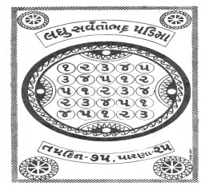
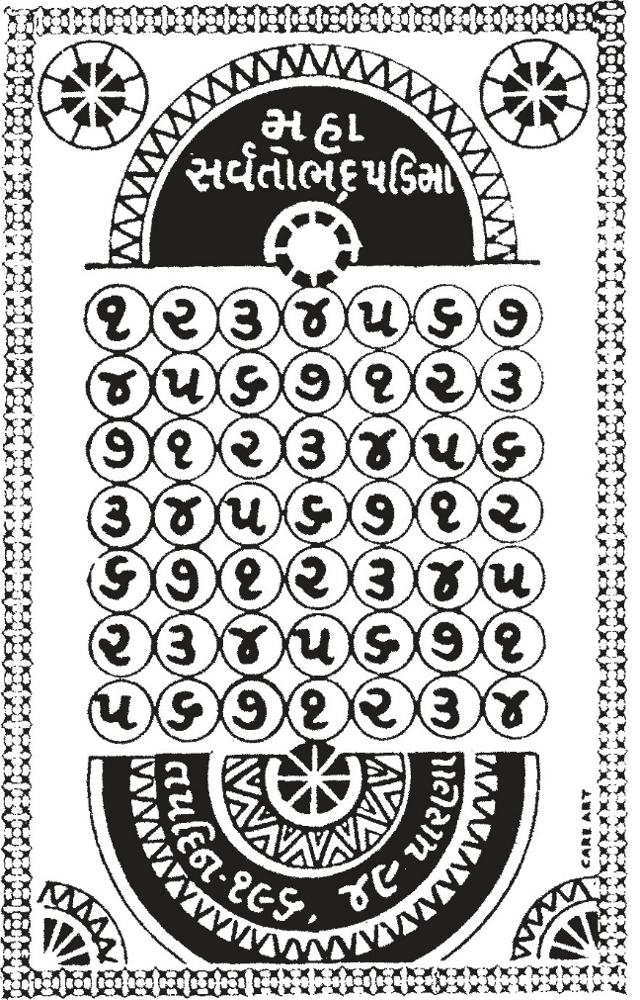
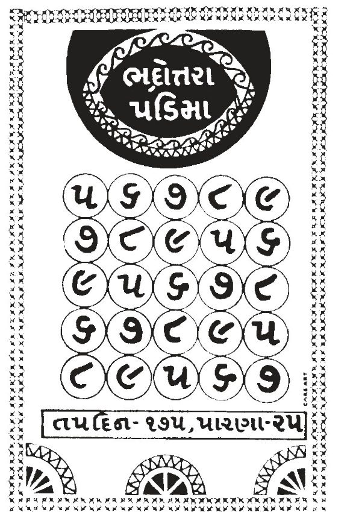

This book Unicode and EPUB Converted by Parth Shah (myself) free of charge as Gyaanseva. You can contact on caparthdshah@gmail.com for further details. You may quote reference "Jain Website"
આઠમો વર્ગ અધ્યયન – 6 : મહાકૃષ્ણા મહાકૃષ્ણા આર્યાનું ક્ષુલ્લક સર્વતોભદ્ર તપ :–
एवं महाकण्हा वि, णवरं–खुड्डागं सव्वओभद्दं पडिमं उवसंपज्जित्ताणं विहरइ, तं जहा––
चउत्थं छठ्ठं अठ्ठमं दसमं |
करेइ, करेइ, करेइ, करेइ, |
करेत्ता करेत्ता करेत्ता करेत्ता करेत्ता करेत्ता करेत्ता करेत्ता करेत्ता करेत्ता करेत्ता करेत्ता करेत्ता करेत्ता करेत्ता करेत्ता करेत्ता करेत्ता |
सव्वकामगुणियं पारेइ पारेत्ता, सव्वकामगुणियं पारेइ पारेत्ता, सव्वकामगुणियं पारेइ पारेत्ता, सव्वकामगुणियं पारेइ पारेत्ता, सव्वकामगुणियं पारेइ पारेत्ता, सव्वकामगुणियं पारेइ पारेत्ता, सव्वकामगुणियं पारेइ पारेत्ता, सव्वकामगुणियं पारेइ पारेत्ता, सव्वकामगुणियं पारेइ पारेत्ता, सव्वकामगुणियं पारेइ पारेत्ता, सव्वकामगुणियं पारेइ पारेत्ता, सव्वकामगुणियं पारेइ पारेत्ता, सव्वकामगुणियं पारेइ पारेत्ता, सव्वकामगुणियं पारेइ पारेत्ता, सव्वकामगुणियं पारेइ पारेत्ता, सव्वकामगुणियं पारेइ पारेत्ता, सव्वकामगुणियं पारेइ पारेत्ता, सव्वकामगुणियं पारेइ पारेत्ता, |
दुवालसमं करेइ, |
|||
अठ्ठमं दसमं |
करेइ, करेइ, |
||
दुवालसमं करेइ, |
|||
चउत्थं छठ्ठं |
करेइ, करेइ, |
||
दुवालसमं करेइ, |
|||
चउत्थं छठ्ठं अठ्ठमं दसमं छठ्ठं अठ्ठमं दसमं |
करेइ, करेइ, करेइ, करेइ, करेइ, करेइ, करेइ, |
||
1
વર્ગ 8 /અધ્ય. 6
178 શ્રી અંતગડ સૂત્ર
दुवालसमं करेइ, |
करेत्ता करेत्ता करेत्ता करेत्ता करेत्ता करेत्ता करेत्ता |
सव्वकामगुणियं पारेइ पारेत्ता, सव्वकामगुणियं पारेइ पारेत्ता, सव्वकामगुणियं पारेइ पारेत्ता, सव्वकामगुणियं पारेइ पारेत्ता, सव्वकामगुणियं पारेइ पारेत्ता, सव्वकामगुणियं पारेइ पारेत्ता, सव्वकामगुणियं पारेइ । |
|
चउत्थं दसमं |
करेइ, करेइ, |
||
दुवालसमं करेइ, |
|||
चउत्थं छठ्ठं अठ्ठमं |
करेइ, करेइ, करेइ, |
||
एवं खलु एयं खुड्डागसव्वओभद्दस्स तवोकम्मस्स पढमं परिवाडिं तिहिं मासेहिं दसहि य दिवसेहिं अहासुत्तं जाव आराहेत्ता दोच्चाए परिवाडीए चउत्थं करेइ, करेत्ता विगइवज्जं पारेइ, पारेत्ता जहा रयणावलीए तहा एत्थ वि चत्तारि परिवाडीओ । पारणा तहेव । चउण्हं कालो संवच्छरो मासो दस य दिवसा । सेसं तहेव जाव सिद्धा । णिक्खेवओ । ભાવાર્થ :– મહાકૃષ્ણા આર્યાનું વર્ણન પણ પૂર્વવત્ સમજવું. વિશેષતા એ છે કે આર્યા ચંદનબાળાજીની અનુજ્ઞા પ્રાપ્ત કરી તેઓએ ''લઘુ સર્વતોભદ્ર'' તપની આરાધના કરી. જે આ પ્રમાણે છે–
સૌ પ્રથમ એક ઉપવાસ, વિગયયુક્ત પારણું કર્યું, પછી છઠ–પારણું. અઠ્ઠમ–પારણું. ચોલું–પારણું.
પાંચ–પારણું. આ રીતે પ્રથમ લાઈન પૂર્ણ કરી ત્યાર પછી અઠ્ઠમ–ચાર–પાંચ–એક ઉપવાસ–છઠની બીજી લાઈન પૂર્ણ કરી. પછી પાંચ–એક ઉપવાસ–છઠ–અઠ્ઠમ–ચારની ત્રીજી લાઈન પૂર્ણ કર્યા બાદ છઠ–અઠ્ઠમ–ચાર–પાંચ–એક ઉપવાસની ચોથીલાઈન પૂર્ણ કરીને છેલ્લે ચાર–પાંચ–એક ઉપવાસ–
છઠ–અઠ્ઠમની પાંચમી લાઈન પૂર્ણ કરી. લઘુસર્વતોભદ્ર તપની પ્રથમ પરિપાટી વિગય યુક્ત પારણા સહિત ત્રણ મહિના અને દશ દિવસમાં પૂર્ણ થાય છે.
આ રીતે ચાર પરિપાટી એક વર્ષ, એક માસ અને દશ દિવસમાં પૂર્ણ થાય છે. મહાકૃષ્ણા આર્યાએ લઘુસર્વતોભદ્ર તપની ચાર પરિપાટી પૂર્ણ કરી બીજી પરિપાટીમાં પારણામાં વિગય વર્જીને અને તે પ્રમાણે (ત્રીજી અને ચોથી પરિપાટી)રત્નાવલી તપની જેમ ચારે ય પરિપાટીઓની આરાધના કરી યાવત્ તેર વર્ષ ચારિત્ર પર્યાયનું પાલન કરી સિદ્ધ, બુદ્ધ, મુક્ત થયાં. આ અધ્યયનનું ઉપસંહાર વાક્ય પૂર્વવત્ સમજવું.
વિવેચન :–
સર્વતોભદ્ર તપ બે પ્રકારનું છે. લઘુસર્વતોભદ્ર અને મહાસર્વતોભદ્ર તપ. ગણત્રી કરવા પર જેની ગણના આંક સમાન જ હોય, વિષમ ન હોય અર્થાત્ જે બાજુથી તેની ગણત્રી કરો એ બાજુથી એનો 179
સરવાળો એક સરખો જ આવે તેને સર્વતોભદ્ર તપ કહે છે. આ સૂત્રમાં મહાકૃષ્ણા આર્યાના લઘુસર્વતોભદ્ર તપનું વર્ણન કરવામાં આવ્યું છે. ''લઘુ''માં એકથી પાંચ ઉપવાસ સુધી વધવાનું હોય છે. જ્યારે ''મહા''માં એકથી સાત ઉપવાસ સુધી ક્રમશઃ ચઢવાનું હોય છે. ચાર પરિપાટીના પારણા ''રત્નાવલી'' તપની સમાન જ સમજવા.
લઘુસર્વતોભદ્ર તપનું સ્થાપના યંત્ર વર્ગ

8 /અધ્ય. 6
ા વર્ગ–8 : અધ્ય.–6 સંપૂર્ણા 180 શ્રી અંતગડ સૂત્ર આઠમો વર્ગ અધ્યયન – 7 : વીરકૃષ્ણા વીરકૃષ્ણા આર્યાનું મહાસર્વતોભદ્ર તપ :–
एवं वीरकण्हा वि णवरं–महालयं सव्वओभद्दं तवोकम्मं उवसंपज्जित्ता णं विहरइ, तं जहा–
चउत्थं छठ्ठं अठ्ठमं दसमं |
करेइ, करेइ, करेइ, करेइ, |
करेत्ता करेत्ता करेत्ता करेत्ता करेत्ता करेत्ता |
सव्वकामगुणियं पारेइ पारेत्ता, सव्वकामगुणियं पारेइ पारेत्ता, सव्वकामगुणियं पारेइ पारेत्ता, सव्वकामगुणियं पारेइ पारेत्ता, सव्वकामगुणियं पारेइ पारेत्ता, सव्वकामगुणियं पारेइ पारेत्ता, |
|
दुवालसमं करेइ, |
||||
चोद्दसमं |
करेइ, |
|||
सोलसमं करेइ, करेत्ता सव्वकामगुणियं पारेइ पारेत्ता ॥पढमा लया ॥ |
||||
दसमं |
करेइ, |
करेत्ता करेत्ता करेत्ता करेत्ता करेत्ता करेत्ता |
सव्वकामगुणियं पारेइ पारेत्ता, सव्वकामगुणियं पारेइ पारेत्ता, सव्वकामगुणियं पारेइ पारेत्ता, सव्वकामगुणियं पारेइ पारेत्ता, सव्वकामगुणियं पारेइ पारेत्ता, सव्वकामगुणियं पारेइ पारेत्ता, |
|
दुवालसमं करेइ, |
||||
च ोद्दसमं सोलसमं चउत्थं छठ्ठं |
करेइ, करेइ, करेइ, करेइ, |
|||
अठ्ठमं करेइ, करेत्ता सव्वकामगुणियं पारेइ पारेत्ता ॥ बीया लया ॥ |
||||
सोलसमं चउत्थं छठ्ठं अठ्ठमं |
करेइ, करेइ, करेइ, करेइ, |
करेत्ता करेत्ता करेत्ता करेत्ता |
सव्वकामगुणियं पारेइ पारेत्ता, सव्वकामगुणियं पारेइ पारेत्ता, सव्वकामगुणियं पारेइ पारेत्ता, सव्वकामगुणियं पारेइ पारेत्ता, |
|
1
181
दसमं |
करेइ, |
करेत्ता करेत्ता |
सव्वकामगुणियं पारेइ पारेत्ता, सव्वकामगुणियं पारेइ पारेत्ता, |
|||
दुवालसमं करेइ, |
||||||
चोद्दसमं करेइ, करेत्ता सव्वकामगुणियं पारेइ पारेत्ता ॥ तइया लया ॥ |
||||||
अठ्ठमं दसमं |
करेइ, करेइ, |
करेत्ता करेत्ता करेत्ता करेत्ता करेत्ता करेत्ता |
सव्वकामगुणियं पारेइ पारेत्ता, सव्वकामगुणियं पारेइ पारेत्ता, सव्वकामगुणियं पारेइ पारेत्ता, सव्वकामगुणियं पारेइ पारेत्ता, सव्वकामगुणियं पारेइ पारेत्ता, सव्वकामगुणियं पारेइ पारेत्ता, |
|||
दुवालसमं करेइ, |
||||||
चोद्दसमं सोलसमं चउत्थं |
करेइ, करेइ, करेइ, |
|||||
छठ्ठं करेइ, करेत्ता सव्वकामगुणियं पारेइ पारेत्ता ॥ चउत्थी लया ॥ |
||||||
चोद्दसमं सोलसमं चउत्थं छठ्ठं अठ्ठमं दसमं |
करेइ, करेइ, करेइ, करेइ, करेइ, करेइ, |
करेत्ता करेत्ता करेत्ता करेत्ता करेत्ता करेत्ता |
सव्वकामगुणियं पारेइ पारेत्ता, सव्वकामगुणियं पारेइ पारेत्ता, सव्वकामगुणियं पारेइ पारेत्ता, सव्वकामगुणियं पारेइ पारेत्ता, सव्वकामगुणियं पारेइ पारेत्ता, सव्वकामगुणियं पारेइ पारेत्ता, |
|||
दुवालसमं करेइ, करेत्ता सव्वकामगुणियं पारेइ पारेत्ता ॥ पंचमीलय॥ |
||||||
छठ्ठं अठ्ठमं दसमं |
करेइ, करेइ, करेइ, |
करेत्ता करेत्ता करेत्ता करेत्ता करेत्ता करेत्ता |
सव्वकामगुणियं पारेइ पारेत्ता, सव्वकामगुणियं पारेइ पारेत्ता, सव्वकामगुणियं पारेइ पारेत्ता, सव्वकामगुणियं पारेइ पारेत्ता, सव्वकामगुणियं पारेइ पारेत्ता, सव्वकामगुणियं पारेइ पारेत्ता, |
|||
दुवालसमं करेइ, |
||||||
चोद्दसमं सोलसमं |
करेइ, करेइ, |
|||||
चउत्थं करेइ, करेत्ता सव्वकामगुणियं पारेइ पारेत्ता ॥ छठ्ठी लया ॥ |
||||||
दुवालसमं करेइ, |
करेत्ता करेत्ता |
सव्वकामगुणियं पारेइ पारेत्ता, सव्वकामगुणियं पारेइ पारेत्ता, |
||||
चोद्दसमं |
करेइ, |
|||||
વર્ગ 8 /અધ્ય. 7
182 શ્રી અંતગડ સૂત્ર
सोलसमं चउत्थं छठ्ठं अठ्ठमं |
करेइ, करेइ, करेइ, करेइ, |
करेत्ता करेत्ता करेत्ता करेत्ता |
सव्वकामगुणियं पारेइ पारेत्ता, सव्वकामगुणियं पारेइ पारेत्ता, सव्वकामगुणियं पारेइ पारेत्ता, सव्वकामगुणियं पारेइ पारेत्ता, |
दसमं करेइ, करेत्ता सव्वकामगुणियं पारेइ । ॥ सत्तमी लया ॥ एक्काए कालो अठ्ठ मासा पंच य दिवसा । चउण्हं दो वासा अठ्ठ मासा वीसं दिवसा । सेसं तहेव जाव सिद्धा । णिक्खेवओ । ભાવાર્થ :– આ પ્રમાણે વીરકૃષ્ણા આર્યાનું પણ ચરિત્ર સમજી લેવું જોઈએ. વિશેષમાં વીરકૃષ્ણા આર્યાએ મહાસર્વતોભદ્ર તપની આરાધના કરી. જે આ પ્રમાણે છે–
પ્રથમ લતા :– સૌ પ્રથમ એક ઉપવાસ કર્યો, ત્યાર પછી છઠ, અઠ્ઠમ, ચાર, પાંચ, છ, સાત ઉપવાસ કર્યાં. આ પ્રથમ લતા થઈ. પારણામાં વિગયયુક્ત પારણાં કર્યા.
બીજી લત્તા– સર્વપ્રથમ ચાર(ચોલું) એક ઉપવાસ, પાંચ, છ, સાત, એક ઉપવાસ, છઠ, અઠ્ઠમ આ ક્રમથી બીજી લતાની આરાધના કરી.
ત્રીજી લતા– સાત, એક ઉપવાસ, છઠ, અઠ્ઠમ, ચાર, પાંચ, છ આ ક્રમથી ત્રીજી લતાની આરાધના કરી.
ચોથી લતા– સર્વપ્રથમ અઠ્ઠમ, ચાર, પાંચ છ, સાત, એક ઉપવાસ, છઠથી ચોથી લતાની આરાધના કરી.
પાંચમી લતા– સર્વપ્રથમ છ ઉપવાસ, સાત, એક ઉપવાસ, છઠ, અઠ્ઠમ, ચાર, પાંચથી પાંચમી લતાની આરાધના કરી.
છઠ્ઠી લતા– સર્વપ્રથમ છઠ, અઠ્ઠમ, ચાર, પાંચ, છ, સાત, એક ઉપવાસથી છઠ્ઠી લતાની આરાધના કરી.
સાતમી લતા– સર્વપ્રથમ પાંચ, છ, સાત, એક ઉપવાસ, છઠ, અઠ્ઠમ, ચારથી સાતમી લતાની આરાધના કરી.
આ રીતે સાત લતાની એક પરિપાટી થઈ. એક પરિપાટી આઠ મહિના અને પાંચ દિવસમાં પૂર્ણ થાય છે. (જેમાં ઓગણપચાસ દિવસ પારણાના અને છ મહિના–સોળદિવસ(196 દિવસ) તપસ્યાના થાય છે.) પ્રથમ પરિપાટીના પારણાં વિગયયુક્ત કર્યાં. આમ ચાર પરિપાટી વીરકૃષ્ણા આર્યાએ બે વર્ષ, આઠ મહિના, વીસ દિવસમાં (980 દિવસ) પૂર્ણ કરી. ચારે ય પરિપાટીના પારણાં રત્નાવલી તપ સમાન જ સમજવા. અનેકવિધ તપની આરાધના કરી ચૌદ વર્ષની ચારિત્રપર્યાયનું પાલન કરી યાવત્ સિદ્ધગતિને પામ્યાં. ઉપસંહાર વાક્ય પૂર્વવત્ સમજવું.
183
મહાસર્વતોભદ્ર તપનું સ્થાપના યંત્ર

વર્ગ 8 /અધ્ય. 7
ા વર્ગ–8 : અધ્ય.–7 સંપૂર્ણા 184 શ્રી અંતગડ સૂત્ર આઠમો વર્ગ અધ્યયન – 8 : રામકૃષ્ણા રામકૃષ્ણા આર્યાની ભદ્રોત્તરપ્રતિમાની આરાધના :–
एवं रामकण्हा वि, णवरं– भद्दोत्तर पडिमं उवसंपज्जित्ता णं विहरइ, तं जहा–
दुवालसमं करेइ, |
करेत्ता करेत्ता करेत्ता करेत्ता |
सव्वकामगुणियं पारेइ पारेत्ता, सव्वकामगुणियं पारेइ पारेत्ता, सव्वकामगुणियं पारेइ पारेत्ता, सव्वकामगुणियं पारेइ पारेत्ता, |
||
चोद्दसमं सोलसमं अठ्ठारसमं |
करेइ, करेइ, करेइ, |
|||
वीसइमं करेइ, करेत्ता सव्वकामगुणियं पारेइ पारेत्ता ॥ पढमा लया ॥ |
||||
सोलसमं अठ्ठारसमं वीसइमं |
करेइ, करेइ, करेइ, |
करेत्ता करेत्ता करेत्ता करेत्ता |
सव्वकामगुणियं पारेइ पारेत्ता, सव्वकामगुणियं पारेइ पारेत्ता, सव्वकामगुणियं पारेइ पारेत्ता, सव्वकामगुणियं पारेइ पारेत्ता, |
|
दुवालसमं करेइ, |
||||
चोद्दसमं करेइ, करेत्ता सव्वकामगुणियं पारेइ पारेत्ता ॥ बीया लया ॥ |
||||
वीसइमं |
करेइ, |
करेत्ता करेत्ता करेत्ता करेत्ता |
सव्वकामगुणियं पारेइ पारेत्ता, सव्वकामगुणियं पारेइ पारेत्ता, सव्वकामगुणियं पारेइ पारेत्ता, सव्वकामगुणियं पारेइ पारेत्ता, |
|
दुवालसमं करेइ, |
||||
चोद्दसमं सोलसमं |
करेइ, करेइ, |
|||
अठ्ठारसमं करेइ, करेत्ता सव्वकामगुणियं पारेइ पारेत्ता ॥तइया लया॥ |
||||
चोद्दसमं सोलसमं अठ्ठारसमं |
करेइ, करेइ, करेइ, |
करेत्ता करेत्ता करेत्ता |
सव्वकामगुणियं पारेइ पारेत्ता, सव्वकामगुणियं पारेइ पारेत्ता, सव्वकामगुणियं पारेइ पारेत्ता, |
|
1
185
वीसइमं |
करेइ, |
करेत्ता |
सव्वकामगुणियं पारेइ पारेत्ता, |
|
दुवालसमं करेइ, करेत्ता सव्वकामगुणियं पारेइ ॥ चउत्थी लया ॥ |
||||
अठ्ठारसमं वीसइमं |
करेइ, करेइ, |
करेत्ता करेत्ता करेत्ता करेत्ता |
सव्वकामगुणियं पारेइ पारेत्ता, सव्वकामगुणियं पारेइ पारेत्ता, सव्वकामगुणियं पारेइ पारेत्ता, सव्वकामगुणियं पारेइ पारेत्ता, |
|
दुवालसमं करेइ, |
||||
चोद्दसमं |
करेइ, |
|||
सोलसमं करेइ, करेत्ता सव्वकामगुणियं पारेइ पारेत्ता ॥पंचमी लया ॥ एक्काए कालो छम्मासा वीस य दिवसा । चउण्हं कालो दो वरिसा दो मासा वीस य दिवसा । सेसं तहेव जहा काली जाव सिद्धा । णिक्खेवओ । ભાવાર્થ :– રામકૃષ્ણા આર્યાનું ચરિત્ર પણ પૂર્વવત્ સમજવું. વિશેષમાં તેણે ભદ્રોત્તરપ્રતિમા તપનું આરાધન કર્યું. તે આ પ્રમાણે છે–
પ્રથમ લતા– સર્વપ્રથમ પાંચ છ, સાત, આઠ, નવ ઉપવાસ ક્રમશઃ પ્રથમ લતામાં કર્યા.
બીજી લતા– ત્યાર પછી સાત, આઠ, નવ, પાંચ, છ ઉપવાસ ક્રમશઃ બીજી લતામાં કર્યા.
ત્રીજી લતા– નવ, પાંચ, છ, સાત, આઠ ઉપવાસ ક્રમશઃ ત્રીજી લતામાં કર્યા.
ચોથી લતા– ત્યાર પછી છ, સાત, આઠ, નવ પાંચ ઉપવાસ ચોથી લતામાં કર્યા.
પાંચમી લતા– ત્યાર પછી આઠ, નવ, પાંચ, છ, સાત ઉપવાસ પાંચમી લતામાં કર્યા.
આ પ્રમાણે પાંચ લતાની એક પરિપાટી થાય છે. એક પરિપાટીમાં છ માસ, વીસ દિવસ થાય છે. ચાર પરિપાટી બે વર્ષ, બે માસ, વીસ દિવસમાં પૂર્ણ થાય છે. આ રીતે રામકૃષ્ણા આર્યાએ પણ કાલી આર્યાની સમાન ચાર પરિપાટી પૂર્ણ કરી. પંદર વર્ષની ચારિત્ર પર્યાયનું પાલન કરી યાવત્ સિદ્ધગતિને પામ્યાં. ઉપસંહાર વાક્ય પૂર્વવત્ સમજવું.
વિવેચન :–
ભદ્રોતરપ્રતિમા તપની પ્રથમ પરિપાટીમાં પચ્ચીસ(રપ) દિવસ પારણાનાં થાય અને પાંચ મહિના અને અને રપ(પચ્ચીસ) દિવસ તપના થાય છે. (175 દિવસ). ચાર પરિપાટીમાં 3 મહિના, 10 દિવસ(100 દિવસ) પારણાનાં તથા 23 મહિના 10 દિવસ(700 દિવસ) તપસ્યાના થાય છે.
ભદ્રોત્તરપ્રતિમાનો અર્થ થાય છે– ભદ્રા એટલે કલ્યાણપ્રદાતા અને ઉત્તર એટલે પ્રધાન, પરમ. આ પ્રતિમા પરમકલ્યાણપ્રદ હોવાથી તેને ભદ્રોત્તરપ્રતિમા કહી છે. તેનો પ્રારંભ પાંચ ઉપવાસથી થાય છે અને નવ વર્ગ 8 /અધ્ય. 8
186 શ્રી અંતગડ સૂત્ર સુધી ક્રમશઃ વધે છે. વિશેષ સમજવા માટે નીચેનું યંત્ર છે.
ભદ્રોત્તરપ્રતિમા તપનું સ્થાપના યંત્ર

ા વર્ગ–8 : અધ્ય.–8 સંપૂર્ણા 187
આઠમો વર્ગ અધ્યયન – 9 : પિતૃસેનકૃષ્ણા પિતૃસેનકૃષ્ણા આર્યાનું મુક્તાવલી તપ :–
एवं पिउसेणकण्हा वि, णवरं– मुत्तावलिं तवोकम्मं उवसंपज्जित्ता णं विहरइ, तं जहा–
चउत्थं छठ्ठं चउत्थं अठ्ठमं चउत्थं दसमं चउत्थं |
करेइ, करेइ, करेइ, करेइ, करेइ, करेइ, करेइ, |
करेत्ता करेत्ता करेत्ता करेत्ता करेत्ता करेत्ता करेत्ता करेत्ता करेत्ता करेत्ता करेत्ता करेत्ता करेत्ता करेत्ता करेत्ता करेत्ता करेत्ता |
सव्वकामगुणियं पारेइ पारेत्ता, सव्वकामगुणियं पारेइ पारेत्ता, सव्वकामगुणियं पारेइ पारेत्ता, सव्वकामगुणियं पारेइ पारेत्ता, सव्वकामगुणियं पारेइ पारेत्ता, सव्वकामगुणियं पारेइ पारेत्ता, सव्वकामगुणियं पारेइ पारेत्ता, सव्वकामगुणियं पारेइ पारेत्ता, सव्वकामगुणियं पारेइ पारेत्ता, सव्वकामगुणियं पारेइ पारेत्ता, सव्वकामगुणियं पारेइ पारेत्ता, सव्वकामगुणियं पारेइ पारेत्ता, सव्वकामगुणियं पारेइ पारेत्ता, सव्वकामगुणियं पारेइ पारेत्ता, सव्वकामगुणियं पारेइ पारेत्ता, सव्वकामगुणियं पारेइ पारेत्ता, सव्वकामगुणियं पारेइ पारेत्ता, |
दुवालसमं करेइ, |
|||
चउत्थं चोद्दसमं चउत्थं सोलसमं चउत्थं अठ्ठारसमं चउत्थं वीसइमं चउत्थं |
करेइ, करेइ, करेइ, करेइ, करेइ, करेइ, करेइ, करेइ, करेइ, |
||
1
વર્ગ 8 /અધ્ય. 9
188 શ્રી અંતગડ સૂત્ર
बावीसइमं करेइ, |
करेत्ता करेत्ता करेत्ता करेत्ता करेत्ता करेत्ता करेत्ता करेत्ता करेत्ता करेत्ता करेत्ता करेत्ता करेत्ता करेत्ता करेत्ता |
सव्वकामगुणियं पारेइ पारेत्ता, सव्वकामगुणियं पारेइ पारेत्ता, सव्वकामगुणियं पारेइ पारेत्ता, सव्वकामगुणियं पारेइ पारेत्ता, सव्वकामगुणियं पारेइ पारेत्ता, सव्वकामगुणियं पारेइ पारेत्ता, सव्वकामगुणियं पारेइ पारेत्ता, सव्वकामगुणियं पारेइ पारेत्ता, सव्वकामगुणियं पारेइ पारेत्ता, सव्वकामगुणियं पारेइ पारेत्ता, सव्वकामगुणियं पारेइ पारेत्ता, सव्वकामगुणियं पारेइ पारेत्ता, सव्वकामगुणियं पारेइ पारेत्ता, सव्वकामगुणियं पारेइ पारेत्ता, सव्वकामगुणियं पारेइ । |
|
चउत्थं |
करेइ, |
||
चउवीसइमं करेइ, |
|||
चउत्थं |
करेइ, |
||
छव्वीसइमं करेइ, |
|||
चउत्थं |
करेइ, |
||
अठ्ठावीसइमं करेइ, |
|||
चउत्थं तीसइमं चउत्थं बत्तीसइमं चउत्थं |
करेइ, करेइ, करेइ, करेइ, करेइ, |
||
चोत्तीसइमं करेइ, |
|||
चउत्थं बतीसइमं |
करेइ, करेइ, |
||
एवं तहेव ओसारेइ जाव चउत्थं करेइ, करेत्ता सव्वकामगुणियं पारेइ । एक्काए कालो एक्कारस मासा पण्णरस य दिवसा । चउण्हं तिण्णि वरिसा दस य मासा । सेसं जाव सिद्धा । णिक्खेवओ । ભાવાર્થ :–
પિતૃસેનકૃષ્ણાનું વર્ણન પૂર્વવત્ સમજવું. તેણે મુક્તાવલી તપની આરાધના કરી. જે આ પ્રમાણે છે–
સર્વપ્રથમ ઉપવાસ કર્યો, સર્વકામગુણયુક્ત પારણું કર્યું. પછી છઠ્ઠ કર્યો, સર્વકામ ગુણયુક્ત પારણું કર્યું. પુનઃ ઉપવાસ કર્યો–પારણું. અઠ્ઠમ–પારણું. ઉપવાસ–પારણું. આમ વચ્ચે એક એક ઉપવાસ કરતાં કરતાં ક્રમશઃ પંદર ઉપવાસ સુધી ચઢ્યા પછી એક ઉપવાસ કરી પારણું છેલ્લે સોળ ઉપવાસ કર્યા. પારણું કરી ઉપવાસ કર્યો અને સર્વકામગુણયુક્ત(વિગયયુક્ત) પારણું કર્યું. ત્યાર પછી પશ્ચાનુપૂર્વીથી વચ્ચે એક એક ઉપવાસ કરતાં ક્રમશઃ સોળથી ઉતરતાં એક સુધી ઉતર્યા. આમ અગિયાર મહિના અને પંદર દિવસમાં એક પરિપાટી પૂર્ણ થાય છે. ચાર પરિપાટીમાં ત્રણ વર્ષ અને દસ મહિના થાય. (આમ 1140 દિવસ 189
તપના અને 240 દિવસ પારણાનાં થાય. એક પરિપાટીના 285 દિવસ તપના અને 60 દિવસ પારણાંનાં થાય.(કુલ–345 દિવસ). આમ પિતૃસેનકૃષ્ણા સોળવર્ષની દીક્ષા પર્યાય પાળી યાવત્ સિદ્ધિને પામ્યાં.
ઉપસંહાર વાક્ય પૂર્વવત્ જાણવું.
મુક્તાવલી તપનું સ્થાપના યંત્ર વર્ગ
8 /અધ્ય. 9
ા વર્ગ–8 : અધ્ય.–9 સંપૂર્ણા 190 શ્રી અંતગડ સૂત્ર આઠમો વર્ગ અધ્યયન – 10 : મહાસેનકૃષ્ણા મહાસેનકૃષ્ણા આર્યાનું વર્ધમાન–આયંબિલ તપ :–
एवं महासेणकण्हा वि, णवरं आयंबिलवड्ढमाणं तवोकम्मं उवसंपज्जित्ता णं विहरइ, तं जहा–
आयंबिलं करेइ, करेत्ता चउत्थं करेइ करेत्ता, बे आयंबिलाइं करेइ, करेत्ता चउत्थं करेइ करेत्ता, तिण्णि आयंबिलाइं करेइ, करेत्ता चउत्थं करेइ करेत्ता, चत्तारि आयंबिलाइं करेइ, करेत्ता चउत्थं करेइ करेत्ता, पंच आयंबिलाइं करेइ, करेत्ता चउत्थं करेइ करेत्ता, छ आयंबिलाइं करेइ, करेत्ता चउत्थं करेइ करेत्ता, एक्कुत्तरियाइ वुड्ढीए आयंबिलाइं वुड्ढंति चउत्थंतरियाइं जाव आयंबिलसयं करेइ, करेत्ता चउत्थं करेइ । तए णं सा महासेणकण्हा अज्जा आयंबिलवड्ढमाणं तवोकम्मं चोद्दसहिं वासेहिं तिहि य मासेहिं वीसहि य अहोरत्तेहिं अहासुत्तं जाव आराहेत्ता जेणेव अज्जचंदणा अज्जा तेणेव उवागया, उवागच्छित्ता वंदइ णमंसइ, वंदित्ता णमंसित्ता बहूहिं चउत्थं जाव भावेमाणी विहरइ । तए णं सा महासेणकण्हा अज्जा तेणं ओरालेणं जाव तवेणं तेएणं तवतेय सिरीए अईव–अईव उवसोहेमाणी चिठ्ठइ । ભાવાર્થ :– મહાસેનકૃષ્ણાનો વૃત્તાંત પણ પૂર્વવત્ સમજવો. વિશેષ એ છે કે તેઓએ વર્ધમાન આયંબિલ તપનું આરાધન કર્યું. જે આ પ્રમાણે છે–
એક આયંબિલ કરી, ઉપવાસ કર્યો. બે આયંબિલ–ઉપવાસ. ત્રણ આયંબિલ–ઉપવાસ. ચાર આયંબિલ–ઉપવાસ. પાંચ આયંબિલ–ઉપવાસ. આ રીતે વચ્ચે એક એક ઉપવાસ કરતાં ક્રમશઃ સો આયંબિલ સુધી ચઢ્યા. ત્યાર પછી છેલ્લે એક ઉપવાસ કર્યો. આમ મહાસેનકૃષ્ણા આર્યાએ 1
191
''વર્ધમાન–આયંબિલ તપ'' ની આરાધના ચૌદ વર્ષ, ત્રણ માસ, વીસ અહોરાત્રિમાં પૂર્ણ કરી. આરાધના પૂર્ણ કરી મહાસેનકૃષ્ણા આર્યા જ્યાં ગુરુણી આર્યા ચંદનબાળાજી હતાં ત્યાં આવ્યાં. ચંદનબાળાજીને વંદન નમસ્કાર કરી તેમની આજ્ઞા પ્રાપ્ત કરી ઘણા ઉપવાસાદિ તપ દ્વારા આત્માને ભાવિત કરતાં વિચરવાં લાગ્યાં. મહાસેનકૃષ્ણા આર્યા શરીરથી અત્યંત દુર્બળ થઈ જવા છતાં તપ તેજથી અત્યંત શોભવા લાગ્યાં.
तए णं तीसे महासेणकण्हाए अज्जाए अण्णया कयाइ पुव्वरत्तावरत्तकाले चिंता जहा खंदयस्स जाव अज्जचंदणं अज्जं आपुच्छइ जाव (संलेहणा)
कालं अणवकंखमाणी विहरइ । तए णं सा महासेणकण्हा अज्जा अज्जचंदणाए अज्जाए अंतिए सामाइयमाइयाइं एक्कारस अंगाइं अहिज्जित्ता, बहुपडिपुण्णाइं सत्तरस वासाइं परियायं पालइत्ता, मासियाए संलेहणाए अप्पाणं झूसित्ता, सठ्ठिं भत्ताइं अणसणाए छेदित्ता जस्सठ्ठाए कीरइ णग्गभावे जाव तमठ्ठं आराहेइ, आराहित्ता चरिमउस्सास णिस्सासेहिं सिद्धा। अठ्ठ य वासा आई, एक्कोत्तरियाए जाव सत्तरस्स । एसो खलु परियाओ, सेणियभज्जाण णायव्वो ॥1॥ ભાવાર્થ :– એકદા સમયે મહાસેનકૃષ્ણા આર્યાને સ્કંદકની જેમ ધર્મ જાગરણ કરતાં ચિંતન ઉત્પન્ન થયું. આર્યા ચંદનાજીની આજ્ઞા લઈ યાવત્ સંલેખનાને ગ્રહણ કરી જીવન મરણની આકાંક્ષાથી રહિત થઈને વિચરવાં લાગ્યાં.
મહાસેનકૃષ્ણા આર્યાએ આર્યા ચંદનાજી પાસે સામાયિકથી લઈ અગિયાર અંગોનું અધ્યયન કર્યું. સત્તર વર્ષની પૂર્ણ સંયમ પર્યાય પાળી, એક માસની સંલેખનાથી આત્માને ભાવિત કરી સાંઠ(60)
ભક્ત અણસણને પૂર્ણ કરી યાવત્ જે કાર્ય માટે સંયમ અંગીકાર કર્યો હતો તેની સંપૂર્ણ આરાધના કરી, અંતિમ શ્વાસોચ્છ્વાસથી સિદ્ધ–બુદ્ધ–મુક્ત થયાં.
શ્રેણિક રાજાની દશ મહારાણીઓમાંથી પ્રથમ કાલીદેવીનો દીક્ષાકાળ આઠ વર્ષ, તત્પશ્ચાત્ ક્રમશઃ એક–એક વર્ષની વૃદ્ધિ કરતાં–કરતાં દસમા મહાસેન કૃષ્ણાનો દીક્ષાકાળ સત્તર વર્ષનો જાણવો જોઈએ.
વિવેચન :–
आयंबिलवड्ढमाणं :– આયંબિલ–વર્ધમાન તપ. જેમાં આયંબિલ ક્રમશઃ વધે છે. આ તપની આરાધના 14 વર્ષ, 3 માસ, 20 દિવસમાં પૂર્ણ થાય છે. એમા ચૌદ વર્ષ દશ દિવસ આયંબિલના તથા 100(સો)
દિવસ ઉપવાસના થાય છે.
આગલા તપોનું પરિશીલન કરવાથી જણાય છે કે તપની જે દિનસંખ્યા બતાવી છે, તેમાં તપ વર્ગ 8 /અધ્ય. 10
2
192 શ્રી અંતગડ સૂત્ર અને પારણાંના દિવસો સમ્મિલિત છે અને આગલાં તપ સૂત્રોનાં પારણાંનો ઉલ્લેખ પણ સાથે જ હોય છે.
આ આયંબિલ વર્ધમાન તપની દિન સંખ્યા જે 14 વર્ષ, 3 માસ, 20 દિવસ આપી છે તે માત્ર તપની સંખ્યા જ છે. તેના બે કારણ છે– પહેલું સૂત્રકારે અગાઉના તપની જેમ અહીં પારણાંનો ઉલ્લેખ કર્યો નથી.
બીજું જો પારણાંના દિવસો સાથે ગણવામાં આવે તો તપની દિનસંખ્યા 14 વર્ષ, 3 માસ, 20 દિવસ ન રહીને 14 વર્ષ, 10 દિવસની થઈ જાય. કારણ કે તપની દિનસંખ્યા મૂળપાઠમાં નિશ્ચિત છે કે– 14 વર્ષ, 3
માસ, 20 દિવસ એટલે 5150(એકાવનસો પચાસ) દિવસ. એમાં પારણાંના સો દિવસ બાદ કરીએ તો 14 વર્ષ ને દશ દિવસ(5050) બાકી રહે. પરંતુ એક થી સો આયંબિલનો સરવાળો 14 વર્ષ 10 દિવસનો છે અને 100 દિવસ ઉપવાસના છે. આમ તપ સંખ્યા જ 14 વર્ષ–3માસ અને વીસ દિવસ થાય છે. તેથી ફલિત થાય છે કે આ સંખ્યા તપદિનની છે અને મહાસેનકૃષ્ણા આર્યાએ વચ્ચે પારણાં નથી કર્યાં.
ા વર્ગ–8 : અધ્ય.–10 સંપૂર્ણા 193
નિક્ષેપ–પરિશેષ |
|
——————————————————————————————————— ——————————————————————————————————— ——————————————————————————————————— ——————————————————————————————————— |
|
एवं खलु जंबू ! समणेणं भगवया महावीरेण जाव संपत्तेणं अठ्ठमस्स अंगस्स अंतगडदसाणं अयमठ्ठे पण्णत्ते । अंतगडदसाणं अंगस्स एगो सुयखंधो । अठ्ठ वग्गा । अठ्ठसु चेव दिवसेसु उद्दिस्सिज्जंति । तत्थ पढमबिइयवग्गे दस–दस उद्देसगा । तइयवग्गे तेरस उद्देसगा। चउत्थ–पंचमवग्गे दस–दस उद्देसगा । छठ्ठवग्गे सोलस उद्देसगा । सत्तमवग्गे तेरस उद्देसगा । अठ्ठमवग्गे दस उद्देसगा । सेसं जहा णायाधम्मकहाणं। ભાવાર્થ :– આ પ્રમાણે હે જંબૂ ! મોક્ષપ્રાપ્ત શ્રમણ ભગવાન મહાવીરે આઠમા અંગ અંતગડદશાનો આ અર્થ પ્રરૂપ્યો છે–કહ્યો છે.
અંતગડદશામાં એક શ્રુતસ્કંધ છે. આઠ વર્ગ છે. આઠ દિવસોમાં આ સૂત્રની વાચના થાય છે.
આઠ વર્ગમાં– પ્રથમ વર્ગના દસ, બીજા વર્ગના આઠ, ત્રીજા વર્ગના તેર ઉદ્દેશક છે. ચોથા અને પાંચમાં વર્ગમાં દશ–દશ ઉદ્દેશક છે. છઠ્ઠા વર્ગમાં સોળ ઉદ્દેશક છે. સાતમા વર્ગમાં તેર ઉદ્દેશક છે અને આઠમા વર્ગમાં દશ ઉદ્દેશક છે. (આમ આઠ વર્ગના નેવું(90) ઉદ્દેશક છે) શેષ વર્ણન જ્ઞાતાધર્મકથા સૂત્રાનુસાર સમજી લેવું જોઈએ.
વિવેચન :–
ઉપલબ્ધ વર્તમાન અંતગડ સૂત્રમાં બીજા વર્ગના આઠ જ ઉદ્દેશક છે. સંભવતઃ વાચના ભેદથી અથવા લિપિ પ્રમાદથી(લેખકની સ્ખલનાથી) દશ ઉદ્દેશા લખવામાં આવ્યા હોય. આ નિર્ણય કેવળી ગમ્ય છે.
નિક્ષેપના આ સૂત્રમાં આર્ય સુધર્માસ્વામીએ પોતાની લઘુતા બતાવતા કહ્યું છે કે અંતગડ સૂત્રના તમામ ભાવો પ્રભુએ ફરમાવ્યા છે. મેં જેવા સાંભળ્યા છે તેવા હું કહું છું. જે છે તે પ્રભુનું જ છે.
ઉપસંહાર :–
–ઃ શ્રી અંતગડ સૂત્રનો સંદેશ :–
(1) મોક્ષ પ્રાપ્તિનું પ્રથમ અને અંતિમ સાધન :– અંતગડ સૂત્ર અનુસાર મોક્ષ પ્રાપ્તિનું અથવા ———————————————————————————————————
———————————————————————————————————
1
194 શ્રી અંતગડ સૂત્ર સંસાર– પ્રપંચથી છૂટવાનું પ્રમુખ સાધન છે– (1) સમ્યગ્ શ્રદ્ધા સાથે સંયમ લેવો. (ર) શાસ્ત્ર કંઠસ્થ કરવા. (3) પોતાની બધી શક્તિ તપસ્યામાં લગાવવી. મોક્ષ માર્ગનું અંતિમ સાધન તપ છે. ભાવ પૂર્વક, વૈરાગ્ય પૂર્વક અને વિવેક પૂર્વક અને ગુરુ આજ્ઞાપૂર્વક કરેલું તપ કર્મ રોગોને મૂળથી નાશ કરવા માટે અચૂક અથવા રામબાણ ઔષધ છે.
તેથી સંયમ અને અધ્યયન સિવાય બાહ્ય અને આભ્યંતર બંને પ્રકારના તપનું મોક્ષ પ્રાપ્તિમાં અનન્ય યોગદાન છે એમ સમજીને તપોમય જીવન જીવવું જોઈએ.
(ર) આ સૂત્રનું નામ અંતગડ પોતે જ આત્માની પરમ શુદ્ધ અવસ્થા તથા આત્મલક્ષ્યનો સંદેશ આપે છે.
આત્મલક્ષ્યે થતી પ્રત્યેક ક્રિયા અંતતોગત્વા આત્માની પરમ શુદ્ધ અવસ્થા એટલે કે સર્વકર્મમુક્તદશા સુધી લઈ જાય છે. બધા જ અધ્યયનો અંતગડકેવળીના નામથી શરૂ થાય છે. (અર્જુનમાળી છોડીને)
(3) આ સૂત્રની રચનાવિધિનો સંદેશ આર્ય સુધર્મા– જંબૂ દ્વારા વિનયધર્મના આચરણને પ્રગટ કરે છે.
વડીલો દ્વારા કરાતો નાના પ્રત્યેનો વિનય, વાત્સલ્યભાવ તરીકે ઓળખાય છે. જે સુધર્મા સ્વામીમાં જોવા મળે છે અને નાના દ્વારા કરતા મોટા પ્રતિના વિનયનું રૂપ છે આદરભાવ, અહોભાવ, જે જંબૂસ્વામીના પ્રત્યેક વ્યવહારમાં સ્પષ્ટ જણાય છે.
(4) રપ અધ્યયન(10+8+7 = રપ)નો એક માત્ર સંદેશ– પરિગ્રહની હેયતા અને ભોગવૃત્તિનો ત્યાગ.
(પ) ત્રીજા વર્ગના આઠમા અધ્યયનનો સંદેશ :–(1) દેવ પણ ભાગ્ય બદલી શકતા નથી (ર) સંતાન પ્રતિ રાગદ્વેષ કર્મબંધનું કારણ બને છે (3) માતૃભક્તિ (4) મોટાની મોટાઈ (પ) સાચો પ્રેમ પાત્રના આત્મોત્થાનમાં બાધક બનતો નથી (6) જે દેખીતી રીતે અહિતકર્તા દેખાય છે તે પણ કર્મક્ષયમાં સહાયક બને છે (7) સમભાવ અને ક્ષમાથી કર્મક્ષય શક્ય બને છે.
(6) ત્રીજા વર્ગના પાંચ અધ્યયનો અને ચોથા વર્ગનો સંદેશ– કુળ અને વૈભવનું મમત્વ છોડો.
(7) પાંચમા વર્ગનો સંદેશ (1) જગતના બધા જ પદાર્થો વિનશ્વર છે. (ર) નિયાણાનું ફળ અશુભ છે (3)
વૈભવનો નશો કે સત્તાનો નશો બંને અનર્થકારી છે. (4) જો જાગત હૈ સો પાવત હૈ. (પ) નિરાશા છોડી આત્મોત્થાન માટે શક્ય હોય તે કરી છૂટો. (6) ધર્મ આરાધકોને સહયોગી બનો. ઉપબૃંહણગુણની વૃદ્ધિ કરો.
(8) છઠ્ઠા વર્ગનો સંદેશ– (1) લક્ષ્મીના પૂજક(વૈશ્ય) પણ વીતરાગતાના પથિક હોય છે. (ર) સરાગીદેવની પૂજાનું મહા અનર્થકારી ફળ છે. (3) વીતરાગની ઉપાસનાનું ઉત્તમ ફળ છે. (4) જનસેવાની વિકૃતિથી ઉત્પન્ન થાય છે ભોગવૃત્તિ. (પ) અપાત્ર–અયોગ્ય વ્યક્તિને મળતી સત્તા કે સહાયતા દુષ્ટમાર્ગે જ વહે છે.
(6) વીતરાગની આરાધના નિર્ભયતાની જનની છે. (7) નિર્ભય ઉપાસકનું અજેય આત્મતેજ હોય છે.
(8) ઉત્તમ કાર્યમાં પણ માતા પિતાની આજ્ઞા પ્રાપ્ત કરવી, આ આર્ય સંસ્કૃતિની વિલક્ષણતા છે. (9)
અપરાધી પણ આરાધક થઈ શકે છે. (10) બાળકની બુદ્ધિને પણ સમજો. (11) બાળકની તેજસ્વિતાને 195
જુઓ. (12) સર્વજ્ઞ વયને નહીં આત્માની યોગ્યતાને જુએ છે. (13) રાજ્યવૈભવ અને સત્તાથી પણ મૂલ્યવાન છે આત્મોત્થાન.
(9) સાતમા વર્ગનો સંદેશ– સુકુમારતામાં બિરાજમાન ધર્મવીર્ય.
(10) આઠમા વર્ગનો સંદેશ– આરાધનાની કસોટી બાહ્યતપ.
નામ સાદશ્યતા કેમ ? :– પહેલા વર્ગના 10 અધ્યયન અને બીજાવર્ગના આઠ અધ્યયનના કુલ 18
(અઢાર) ચરિત્ર નાયકોના નામમાં ચાર નામ એક સમાન છે. સમુદ્ર–સાગર–અક્ષોભ અને અચલ. બંને વર્ગના માતાપિતા અંધકવૃષ્ણિ અને ધારિણી છે. એક જ માતા પિતાના સંતાનોના નામ સમાન કેવી રીતે હોય ? કાં તો બંને વર્ગના માતા પિતા અલગ હોવા જોઈએ અગર ભાઈઓના નામ સમાન તો ન જ હોય તો પૂ. જયમલજી મ. સા. ના કહેવા પ્રમાણે આ અઢાર સગા ભ્રાત ન હોવા જોઈએ.
સમાધાન :– ટીકાકારે આ બાબતમાં કોઈ સમાધાન કર્યું નથી. સંભવી શકે કે તેઓની સામે અંતગડ સૂત્રની વિસ્તૃત વાચના રહી હોય જેથી આ પ્રકારની સમસ્યા જ ઉદ્ભવી ન હોય અથવા તો અનુમાન થાય છે કે પાઠોના સંકોચ કરવાના કારણે આ સમસ્યા ઉત્પન્ન થઈ હોય. જેવી રીતે કાકાનું નામ વિશ્વભૂતિ અને ભત્રીજાનું નામ વિશ્વનંદી, મોટા બાપુજીનું નામ વિશાખાનંદી અને અનુજ(નાનોભાઈ) પુત્રનું નામ વિશાખાભૂતિ આમાં પાછળનું નીકળી જાય તો નામમાં સમાનતા થઈ જાય. અગર એક જ પિતાના પુત્રોના નામ ધનદત્ત, ધનપાલ, ધનકુમાર, ધનદેવ હોઈ શકે છે. અન્ય જગ્યાએ પૂરા નામ હોય પરંતુ સંક્ષિપ્તીકરણમાં પાછળના શબ્દો નીકળી જતાં એક સમાન જ નામ થઈ જાય છે. શોધાર્થીઓ માટે આ વિષય અન્વેષણીય છે. મૂળ પાઠમાં પ્રથમ વર્ગમાં પિતાનું નામ અંધકવૃષ્ણિ છે અને બીજા વર્ગમાં ''વૃષ્ણિ'' છે. એથી પણ ભિન્ન પિતા હોવાની કલ્પના કરી શકાય છે.
આઠે ય વર્ગોના વિષયોની વિવિધ છણાવટ :–
(1) અંતગડદશાનો મુખ્ય વિષય છે મોક્ષ અને મોક્ષના સાધનોની ઉપાદેયતા તથા સંસાર અને સંસારના કારણો–અપાયોની હેયતા.
(ર) આ સંસાર અને સંસારના તમામ સાંસારિક કાર્યો પુણ્ય અને પાપની ઉદયલીલાનું પરિણામ છે.
પુણ્યોદય હોય તો દેવના સહયોગે કાર્ય સિદ્ધ થાય છે અને પાપોદય હોય તો દેવનો યોગ વિનાશનું કારણ બને છે.
આ પૃથ્વી પર દેવાકર્ષણ પાંચ કારણોસર થાય છે. (1) પુણ્યોદયથી– કૃષ્ણ મહારાજના પુણ્યોદયે દ્વારિકા નિર્માણનું કાર્ય. (ર) પાપોદયથી– કૃષ્ણ મહારાજના પાપોદયના કારણે(દ્વિપાયન ૠષિનો આત્મા)
અગ્નિકુમાર દેવ દ્વારા દ્વારિકા વિનાશનું કાર્ય. (3) સાવદ્ય આરાધનાથી– સુલસાની સાવદ્ય ભક્તિથી હરિણૈગમેષી દેવનું આગમન. (4) નિરવદ્ય આરાધનાથી– કૃષ્ણ મહારાજના નિરવદ્ય અઠ્ઠમ તપની આરાધનાથી હરિણૈગમેષીનું આગમન. (પ) સાવદ્ય આરાધકના રોષથી– અર્જુનમાળીના રોષથી નિક્ષેપ/પરિશેષ 196 શ્રી અંતગડ સૂત્ર મુદ્ગરપાણિ યક્ષનું આગમન.
(3) દેવ આરાધનાના ચાર પ્રકાર :– (1) સુદર્શન શ્રેષ્ઠીવત્. (ર) રાજાઓ દ્વારા તીર્થંકર ભગવાનના દર્શનવત્. (3) શ્રીકૃષ્ણના અઠ્ઠમ પૌષધવત્. (4) સુલસા, અર્જુનવત્.
(4) આત્મલક્ષ્યથી લોકોત્તર આરાધનાના ભેદ :–(1) સર્વવિરતિ– 90 પુણ્યાત્માઓના ચરિત્ર ગ્રહણવત્.(ર) દેશવિરતિ– સુદર્શન શ્રેષ્ઠીની વ્રત આરાધનાવત્ અને(3) અનુમોદના– શ્રી કૃષ્ણ વાસુદેવની ધર્મદલાલીની સમાન.(4) તપોવિધિ– 90 સાધુ સાધ્વીજીના વિવિધ તપશ્ચરણ, પ્રતિમાઓનું વર્ણન (પ) કર્મોના વિષયમાં :– (1) શુભ કર્મોના ઉદયથી સંસાર સુખનો ભોગવટો યાદવો સમાન.(ર) સંસારના સુખ ભોગથી પાપકર્મનો બંધ યાદવાધિપતિ સમાન.(3) પુણ્યફળના ત્યાગથી મોક્ષમાર્ગમાં ગતિ–
અર્જુનમાળી સિવાયના 89 આત્માઓ સમાન.(4) પાપકર્મના ઉદયથી દુઃખ ઉત્પન્ન થાય છે અને સમભાવે ઉપસર્ગ પરિષહ સહન કરવાથી મોક્ષ મળે છે. અર્જુનમાળી, ગજસુકુમાલ મુનિવત્.(પ) વૈરની વસુલાતથી પુનઃ કર્મબંધ–સોમિલબ્રાહ્મણ સમાન.(6) જલ્દી કર્મ ક્ષય કરવાનો ઉપાય–બારમી ભિક્ષુ પ્રતિમા.
(6) આધ્યાત્મિક શક્તિ સમક્ષ દૈવી શક્તિ પણ હારે છે. (1) દ્વારિકાના સંયમ આરાધકોને દેવ જલાવી શકતા નથી. (ર) શ્રમણોપાસક શ્રેષ્ઠી સુદર્શનના તેજથી મુદ્ગરપાણિ યક્ષ અભિભૂત થઈ ગયો.
(7) મોહના વિવિધ રૂપ :–(1) સંતાનના મોહથી આર્તભાવ– દેવકીરાણીની સમાન.(ર) સંતાનના મોહથી રૌદ્રભાવ– સોમિલ બ્રાહ્મણ સમાન.(3) સ્ત્રીમોહથી અનર્થ– લલિત ગોષ્ઠી સમાન.(4) દેહાધ્યાસ ત્યાગથી વીતરાગભાવ– ગજસુકુમાલ, અર્જુનમાળી સમાન.
(8) લોકનીતિના ત્રણ રૂપ :– (1) અસમર્થોને સહયોગ– શ્રીકૃષ્ણ દ્વારા વૃદ્ધને સહાયતા કરવા સમાન.
(ર)પ્રજાનું યથાયોગ્ય સંરક્ષણ–શ્રેણિકરાજા સમાન. (3) ઉપકારકાર્યો કરનારને પ્રોત્સાહન–
લલિતગોષ્ઠીને રાજ્યહિત સંબંધી કાર્ય કરવા પર રાજા શ્રેણિક દ્વારા અપાયેલા સ્વતંત્રતાના અધિકાર સમાન.
આ પ્રમાણે અંતગડદશાનો પ્રતિપાદ્ય વિષય છે– સંસાર પક્ષના વિવિધ રૂપો બતાવીને સાધકને ત્યાગની પ્રેરણા દઈ ભવાંતઃક્રિયા તરફ લઈ જવાનો. શ્રી સુધર્મા સ્વામીએ આર્ય જંબૂ અણગારના પ્રશ્નોનું સમાધાન કરવા, વિવિધ ચરિત્રોનું સંયોજન કરી, ભવની અંતક્રિયાનું જ વિવિધ પાસાઓ દ્વારા પ્રતિપાદન કર્યું છે.
ભક્તિનું પ્રયોગાત્મક સૂત્ર– પ્રણિપાત સૂત્ર :–(નમોત્થુણંનો પાઠ)
જૈન ભક્તિ સાધનામાં પ્રણિપાત સૂત્રનું અત્યધિક મહત્ત્વ છે. શ્રીમદ્ હરિભદ્રસૂરીશ્વરજીએ 'લલિતવિસ્તરા' નામક ટીકામાં 'નમોત્થુણં' સૂત્રની વ્યાખ્યા કરી છે. શ્રી અંતગડ સૂત્રમાં પણ પ્રણિપાત 197
સૂત્રમાં પ્રયુક્ત બધા જ વિશેષણોની અનેકવાર પુનરાવૃત્તિ થઈ છે. જ્યારે જ્યારે આર્ય જંબૂસ્વામી પ્રશ્ન કરે છે ત્યારે ત્યારે આ વિશેષણોનો ભગવાન મહાવીર દેવના વિશેષણો રૂપે બે બે વાર પ્ર્રયોગ કરે છે અને આર્ય સુધર્મા સ્વામી પણ ઉત્તર આપતી વખતે બે વખત પ્રયોગ કરે છે. આ પ્રમાણે શાસ્ત્ર, વર્ગ અને અધ્યયનના ઉત્ક્ષેપમાં ત્રણવાર અને ઉપસંહારમાં એકવાર આ વિશેષણોનો પ્રયોગ થયો છે. આમ પ્રણિપાત સૂત્રની સંખ્યા થાય છે 666 જે આ પ્રમાણે છે–
શાસ્ત્રના ઉત્ક્ષેપ અને ઉપસંહારમાં 4
આઠવર્ગના ઉત્ક્ષેપ અને ઉપસંહારમાં 8 × 4 = 32
90 અધ્યયનોના ઉત્ક્ષેપ–ઉપસંહારમાં 90 × 4 = 360
કુલ : 396 વાર થાય.
પછી જ્યારે તીર્થંકર પરમાત્મા નગર કે નગરીમાં બહાર ઉદ્યાનોમાં પદાર્પણ કરે છે ત્યારે ઉવવાઈ સૂત્રના સમવસરણ અધિકારમાં આવેલા આ વિશેષણો સહિત શરીર વર્ણનની આવૃત્તિ થાય છે અને સમાચાર જ્ઞાત થવા પર રાજાઓ દ્વારા રાજસભામાં સિંહાસન પરથી નીચે ઉતરીને બે પ્રણિપાત સૂત્રો દ્વારા પ્રણિપાત કરાય છે.
સમવસરણ–અધિકારમાં 90
89 નગરીના રાજાઓ દ્વારા પ્રદત્ત સુદર્શન શ્રમણોપાસક દ્વારા પ્રદત્ત |
89 × ર |
'= |
કુલ 270 વાર તથા ઉપરના 396 વાર મળીને 666 વાર થાય.
જોકે વર્તમાને આ રીતે અંતગડની સ્વાધ્યાય પ્રાયઃ કોઈ કરતું નથી. એક એક અક્ષરને સંક્ષેપ કર્યા વિના સમગ્ર સૂત્રની સ્વાધ્યાય કરવામાં આવે તો ભક્તિ સૂત્રની 666 વાર આવૃત્તિ થવી સંભવ છે.
નિક્ષેપ/પરિશેષ ા અંતગડ સૂત્ર સંપૂર્ણા 198 શ્રી અંતગડ સૂત્ર
વર્ગ |
અધ્યયનો (નામ) |
માતા અથવા સાસુ |
પિતા અથવા સસરા |
પતિ પત્ની |
શાસન કાળ |
પ્રથમ 10 |
ગૌતમ, સમુદ્ર, સાગર, ગંભીર, સ્તિમિત,અચલ, કાંપિલ્ય, અક્ષોભ, પ્રસન્નજિત, વિષ્ણુકુમારાદિ 10 |
માતા ધારિણી દેવી |
પિતા અંધક વૃષ્ણિરાજા |
8 રાજ કન્યા |
અ રિ ષ્ટ ને મિ પ્ર જી |
બીજો 8 |
આક્ષોભ, સાગર, સમુદ્ર, હિમવાન, અચલ, ધરણ, પૂરણ તથા અભિચંદ્ર આદિ–8 |
ધારિણી (સુભદ્રા) |
8 રાજ કન્યા |
વૃષ્ણિરાજા |
|
ત્રીજો 13 |
અનીકસેન, અનંતસેન, અનીહત, વિદ્વત, દેવયશ તથા શત્રુસેને 6 સારણ કુમાર – 1 ગજસુકુમાલ – 1 સુમુખ, દુમુખ, કૂપદારક – 3 દારૂક, અનાદષ્ટિકુમાર–ર |
સુલસા (પાલક) |
|||